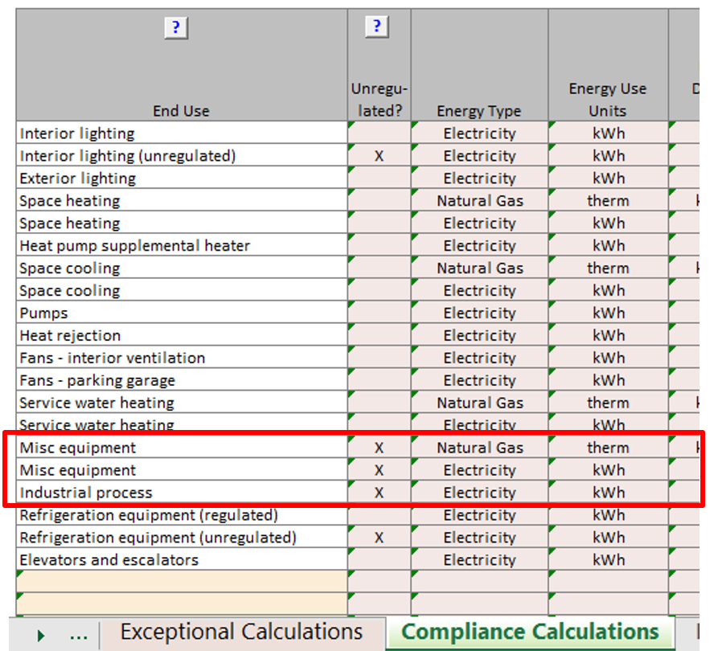
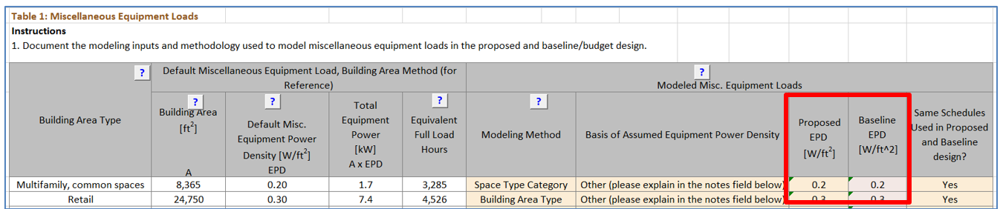
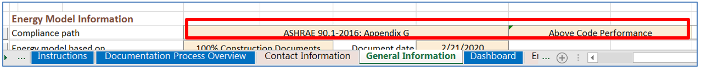
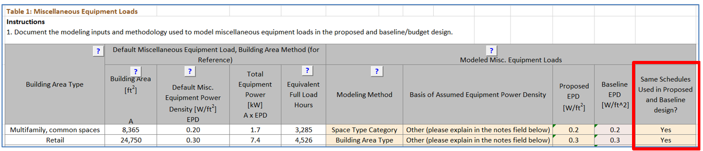
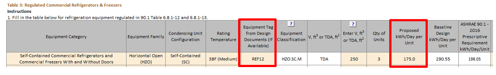

This category includes receptacle loads, non-HVAC motors, process loads, refrigeration equipment,
elevators and other systems and components reported on Plug, Process and Other Loads tab of the
Compliance Form. Some of these systems, such as certain refrigeration equipment and elevators, are
regulated by 90.1, while others are not. Table 9 summarizes the checks included in this group.
Table 9: Plug, Process and Other Loads Checks Overview
Legend: PASS/FAIL/NA outcome is determined
automatically in the Quality Control Checks tab of the Compliance Form.
Table 10 illustrates whether trade-offs are allowed for systems and components included in the PPO
category by the Energy Cost Budget and Performance Rating Methods. If trade-offs are not allowed, the
review should be limited to verifying that the energy use of the associated systems and equipment is the
same in the baseline/budget and proposed designs. No other checks are necessary.
Table 10: 90.1 Trade-off Limits for Plug, Process and Other Loads
2016 ECB
2019/2022 ECB
2016 and 2019 PRM and 2022 G3.2 PRM
2022 PRM G3.3
Min. compliance
Above code
Min. compliance
Above code
Miscellaneous plug and process equipment
No
No
No
Yes
No
Yes
Commercial refrigerators and freezers
No
Yes
Yes
Yes
Yes
Yes
Regulated Motors
Yes
Yes
Yes
Yes
Yes
Yes
Elevators
No
No
Yes
Yes
Yes
Yes
Combined Heat and Power
Recovered Heat Only
In addition, skip review checks for the following systems and components if they are not reported in the
Compliance Form and are not expected to be specified:
Elevators in buildings two stories or less
Commercial refrigerators and freezers in building types other than convention center, retail,
school/university, dining, health care clinic, hospital or warehouse
Regulated motors in buildings 10 stories or less
Combined heat and power in any project
Within the given type of equipment, focus on verifying units with the highest contribution to the total
energy use of that category or that are representative and spot-check the rest. For example, if a
project includes 10 passenger elevators of the same type and two service elevators, the review should
focus on the passenger elevator.
For 90.1 2022 PRM alterations subject to G3.3 (i.e., Minor Alterations), the summary tables on the
Quality Control Checks tab in the Compliance Form may not reflect correct values for the baseline since
projects, for the most part, only enter proposed design information and provide notes as to what was
modeled in the baseline in the notes fields associated with the proposed design related tables. Refer to
the
90.1 2022 Section G3.3 Performance Calculations for
Other Alterations
section for more information regarding 90.1 2022 G3.3.
PPO01 The difference between the modeled baseline/budget and proposed misc. equipment and process
energy use is as expected
Review Tips
Modeled energy use from miscellaneous equipment and industrial is reported in Table 2 of the
Compliance Calculations tab
90.1 2016/2019/2022 Energy Cost Budge Method or 90.1 2016/2019/2022 Performance Rating
Method minimum code compliance:
Modeled energy use of miscellaneous loads must be the same for the baseline/budget
and proposed design. Differences in reported energy use should be flagged as an error.
Exception: 90.1 2019 and 2022 PRM projects can model credit when receptacle controls
are included in the proposed design in spaces not required by Section 8.4.2. The
credit and corresponding savings shall not exceed 10% per Table G3.1 #12 Proposed
Building Performance column.
90.1 2016/2019/2022 Performance Rating Method when documenting above code performance:
Energy use of the baseline may differ from proposed design as specifically approved
by the rating authority. Complete checks PPO02 and PPO03 to confirm that the
difference is justified.

PPO02–P Proposed design miscellaneous unregulated plug and process loads reported in the Compliance Form are
as expected.
90.1 2016 ECB
Table 11.5.1 #12
Unregulated receptacle and process loads must be estimated based on the building area
type or space type category and included in the simulations and when calculating the
energy cost budget and design energy cost.
All end-use load components within and associated with the building must be modeled
including but not limited to exhaust fans, parking garage ventilation fans, exterior
building lighting, swimming pool heaters and pumps, elevators and escalators,
refrigeration equipment, and cooking equipment.
Table 11.5.1 Section 13 allows excluding components if their energy use does
not affect the energy use of systems and components that are being considered for trade-off and
the prescriptive requirements applicable to the excluded component are met.
Table 11.5.1 Section 14 allows excluding components that cannot be explicitly
modeled by the simulation program if their energy impact on the trade-offs is not significant.
90.1 2019/2022 ECB
Table 11.5.1 #12/ Table 12.5.1 #12
The requirements for modeling unregulated loads are aligned with 90.1 2016 quoted above. The
references to Table 11.5.1 sections 13 and 14 were removed, however the exceptions still apply
because they are covered in the updated Table 11.5.1/12.5.1 Section 14 that addresses all
systems and components in the proposed design.
90.1 2016, 2019, and 2022 PRM:
Table G3.1 #12:
Unregulated receptacle and process loads, such as those for office and other equipment, must be
estimated based on the building area type or space type category and must always be included in
simulations of the building.
Review Tips
Miscellaneous unregulated plug loads are reported in Tables 1 of the Plug, Process and Other
Loads tab of the Compliance Form. The table includes the default values established as described
in Appendix A of this manual based on the building area types applicable to the project.
Proposed EPD significantly deviating from the provided default values without sufficient
justifications included in the Notes field below the table should be flagged in the review.

Process equipment is reported in Table 4 of the Plug, Process and Other Loads tab in the Compliance
Form. Ensure that the project captured all unique end-use load components within and associated with the
building including but not limited to swimming pool heaters and pumps, fireplaces, firepits, BBQs, water
features, etc.
PPO02–B Miscellaneous unregulated baseline/budget plug and process loads reported in the Compliance
Form are the same as proposed unless allowed to differ.
90.1 2016 and 2019/ 2022 ECB
Table 11.5.1 #12/Table 12.5.1 #12
Miscellaneous receptacle and process loads in the budget design must be identical to the proposed design.
90.1 2016, 2019, and 2022 PRM
Table G3.1 #12
Energy used for cooking equipment, receptacle loads, computers, medical or laboratory equipment,
and manufacturing and industrial process equipment not specifically identified in the standard,
power and energy rating or capacity of the equipment must be identical between the proposed
building performance and the baseline building performance.
Exceptions: When quantifying performance that exceeds the requirements of
Standard 90.1 (but not when using the PRM as an alternative path for minimum standard compliance
per Section 4.2.1.1) variations of the power requirements, schedules, or control sequences of
the equipment modeled in the baseline building design from those in the proposed design shall be
approved by the rating authority based on documentation that the equipment installed in the
proposed design represents a significant verifiable departure from documented current
conventional practice. The burden of this documentation is to demonstrate that accepted
conventional practice would result in baseline building equipment different from that installed
in the proposed design. Occupancy and occupancy schedules shall not be changed.
Review Tips
Miscellaneous unregulated plug and process loads assumed for the baseline/budget design are
reported in Table 1 of the Plug, Process and Other Loads tab of the Compliance Form. The
baseline/budget equipment power density (EPD) must be equal to proposed except when the
project is documenting above-code performance following 90.1 PRM, as indicated in the
General Model Information section of the General Information tab. In this case, supporting
documentation must be included in the submittal to justify the modeled difference.

Review supporting documentation to verify that the methodology and assumptions used to establish
the baseline and proposed EPDs are substantiated as required in Table G3.1 #12 Exception quoted
above.
PPO03 Miscellaneous unregulated plug and process load schedules reported in the Compliance Form for
the baseline/budget design are the same as for the proposed design unless allowed to differ.
90.1 2016, 2019 and 2022 ECB
Table 11.5.1 #4/Table 12.5.1 #4
The schedules must be typical of the proposed design as determined by the designer and approved
by the authority having jurisdiction, and the same for the proposed design and budget building
design.
90.1 2016 PRM
Table G3.1 #4
The schedules must be typical of the proposed building type as determined by the designer and
approved by the rating authority.
Table G3.1 #12
Occupancy and occupancy schedules must not be changed when documenting savings as allowed in
Table G3.1 #12 exception.
90.1 2019 and 2022 PRM
Table G3.1 #4
The schedules must be typical of the proposed building type as determined by the designer and
approved by the rating authority.
Table G3.1 #12
Receptacle schedules must be the same as the proposed design before the receptacle power
credit is applied.
Occupancy and occupancy schedules must not be changed when documenting savings as allowed in
Table G3.1 #12 exception.
Review Tips
Confirm that the same schedules are used in the baseline/budget and proposed design based on
Table 1 of the Plug, Process and Other Loads tab. Schedules are only allowed to differ for 90.1
2019 and 2022 PRM projects due to office receptacle controls.

The allowed office receptacle control credit is reflected in Table 10 of the Plug, Process and
Other Loads tab of the Compliance Form.
PPO04 Miscellaneous plug and process loads are modeled as reported in the Compliance Form.
Review simulation reports shown in the table below to verify that the plug and process loads are modeled as
reported. Energy use from miscellaneous equipment and industrial is reported in Table 2 of the
Compliance Calculations tab.
For additional verification, if available in model output reports, check that modeled schedules reflect building
occupancy types including appropriate seasonal and weekly variation. For example, if the building occupancy type is
a school that closes during the summer months, then the miscellaneous plug and process load schedules should be
reflective of this seasonal occupancy pattern. Refer to the Operating Schedule tab in the Compliance Form for
anticipated building occupancy patterns.
eQUEST
BEPU
Trane TRACE 700
Energy Cost Budget report
Trane TRACE 3D Plus
LEED Summary Section 1.6
IESVE
PRM Compliance Report, ECB Compliance Report, Room Loads Report, Zone Loads Report,
System Loads Report, Energy Model Output Report, BPRM Report
EnergyPlus
eplustbl.html ‘LEED Summary’ report
OpenStudio
eplustbl.html ‘LEED Summary’ report
Carrier HAP v5
“LEED Summary” report, Section 2 “Minimum Energy Performance Calculator”, table
titled “Proposed Energy Summary by End Use”.
Design Builder
Output_Performance_1 sheet in LEED Minimum Energy Performance Calculator (.xlsm)
PPO05-P Regulated commercial refrigerators & freezers reported in the Compliance Form for the
proposed design reflect design documents
90.1 2016 ECB
Table 11.5.1 #12 Column A: All end use load components within and associated
with the building must be modeled including, but not limited to refrigeration equipment.
Table 6.8.1-13 Commercial Refrigeration—Minimum Efficiency Requirements
Minimum efficiency requirements specified in the table are mandatory and must be met by the
specified units.
90.1 2019/2022 ECB
Table 11.5.1 #13 Column A/Table 12.5.1 #13 Column A: Where refrigeration
equipment in the proposed design is rated in accordance with AHRI 1200, the rated energy use
shall be modeled. Otherwise, the proposed design shall be modeled using the actual equipment
capacities and efficiencies.
Table 6.8.1-11 Commercial Refrigerators, Commercial Freezers, and Refrigeration—Minimum
Efficiency Requirements
Minimum efficiency requirements specified in the table are mandatory and must be met by the
specified units.
90.1 2016 PRM
Table G3.1 #17 Proposed Building Performance Column: The proposed design shall
be modeled using the actual equipment capacities and efficiencies.
Table 6.8.1-13 Commercial Refrigeration—Minimum Efficiency Requirements: Minimum
efficiency requirements specified in the table are mandatory and must be met by the specified
units.
90.1 2019 and 2022 PRM
Table G3.1 #17 Proposed Building Performance Column: Where refrigeration
equipment in the proposed design is rated in accordance with AHRI 1200, the rated energy use
shall be modeled. Otherwise, the proposed design shall be modeled using the actual equipment
capacities and efficiencies.
Table 6.8.1-11 Commercial Refrigerators, Commercial Freezers, and Refrigeration—Minimum
Efficiency Requirements: Minimum efficiency requirements specified in the table
are mandatory and must be met by the specified units.
Review Tips
Specified regulated refrigerators and freezers are reported in Table 3 of the Plug, Process and
Other Loads tab. Cross-check information provided in the Compliance Form to design documents for
a sample of units focusing on the units that account for largest difference between baseline and
proposed design accounting for unit quantity. Reference to appropriate design documents where
each unit is described must be provided in the last column of Table 3. If the details that must
be captured in Table 3 are not available in the design documents, request equipment cutsheets or
manufacturer literature.

Verify that proposed kWh/day does not exceed corresponding 90.1 requirements shown in the table.
Since these requirements are mandatory, all specified units must have lower rated kWh/Day
consumption.
PPO05-B Baseline/budget design for the regulated commercial refrigerators & freezers reported in the
Compliance Form is established correctly
90.1 2016 ECB
Table 11.5.1 #12 Column B
Receptacle, motor, and process loads shall be modeled and estimated based on the building area
type or space type category and shall be assumed to be identical in the proposed and budget
building designs.
90.1 2019/2022 ECB
Table 11.5.1 #13 Column B/Table 12.5.1 #13 Column B
Where refrigeration equipment is specified in the proposed design and listed in Table 6.8.1-11,
the budget building design shall be modeled as specified in Table 6.8.1-11 using the actual
equipment capacities. If the refrigeration equipment is not listed in Table 6.8.1-11, the budget
building design shall be modeled the same as the proposed design.
90.1 2016 and 2019 PRM
Table G3.1 #13/#17 Baseline Building Performance Column
Where refrigeration equipment is specified in the proposed design and listed in Tables
G3.10.1 and G3.10.2, the baseline building design shall be modeled as specified in
Tables G3.10.1 and G3.10.2 using the actual equipment capacities.
If the refrigeration equipment is not listed in Tables G3.10.1 and G3.10.2, the baseline
building design shall be modeled the same as the proposed design.
90.1 2022 PRM
G3.2 New Construction/Major Alterations
Requirements are the same as described for the 90.1 2016 and 2019 PRM above.
G3.3 Minor Alterations
Based on 90.1 Section G3.3.2.1, commercial refrigerators & freezers included in the scope of
retrofit shall be modeled at efficiency levels meeting the mandatory and prescriptive
requirements in 90.1 Section 6.1.4.
90.1 Section 6.1.4.1, which applies to direct replacements, includes requirements for walk-in
coolers and walk-in freezers (90.1 Section 6.4.5) and equipment efficiency (90.1 Section 6.4.1).
When the scope of the alteration includes new cooling systems installed to serve previously
uncooled spaces the refrigerated display cases (90.1 Section 6.4.6), and refrigeration system
(90.1 Section 6.5.11) are also applicable to the baseline.
Review Tips
Energy use of the regulated refrigerators and freezers in the baseline/budget design is
established automatically in Table 3 on the Plug, Process and Other Loads tab. However, the
calculations are based on the characteristic of the corresponding proposed unit reported in
Table 3 below, thus the related inputs should be verified. Cross-check information provided in
the Compliance Form to design documents for a sample of units focusing on the units that account
for largest difference between baseline and proposed design accounting for unit quantity.
Reference to appropriate design documents where each unit is described must be provided in the
last column of Table 3. If details that must be captured in Table 3 are not available in the
design documents, request equipment cutsheets or manufacturer literature.
For 90.1 2019 and 2022 projects, Table 9 on the Plug, Process and Other Loads tab includes
information about walk-in cooler and freezer equipment. Similar to above, cross-check
information provided in the Compliance Form to design documents for a sample of units.
The check may be skipped if the modeled difference between the baseline/budget and proposed
design is small.
PPO06 Regulated refrigerators and freezers are modeled as reported in the Compliance Form for the
baseline/budget and proposed design.
Review Tips
Since regulated refrigerators and freezers are rated in kWh/day, annual energy use reported in
Table 2 of the Compliance Calculations tab, “Refrigeration Equipment, regulated” row should be
equal to the total value shown in Table 8 of the Plug, Process and Other Loads tab.
Discrepancies should be flagged. Refer to
90.1 2022 Section G3.3
Performance Calculations for Other Alterations
for review tips for alterations subject to 90.1 2022 Section G3.3 (i.e., Minor alterations).
Common Mistakes
90.1 2016 ECB:
Claiming credit for better than code regulated refrigeration systems on projects
following. (Budget and proposed design must be modeled the same)
90.1 2016/2019/2022 PRM:
Reporting all refrigeration systems as unregulated loads on the Compliance
Calculations tab. Energy used by units included in 90.1 2016/2019 and 2022 Table
6.8.1-13/6.8.1-11 must be reported under “Refrigerated Equipment, regulated”.
Refrigeration equipment is not reported or modeled for projects involving building types
that likely have it such as supermarkets, large office buildings, hospitals, schools
that have cafeteria, etc.
Modeled energy use deviates from annual energy use inferred in kWh/Day efficiency
ratings.
Internal gains/losses to space where refrigeration systems are located are not modeled
correctly. Refer to
PNNL Performance Rating Method Reference Manual Section G3.3.6 for
methodology for determining internal gains/losses for packaged refrigeration units
versus units with remote condensers.
PPO07-P Regulated Motors reported in the Compliance Form for the proposed design reflect design
documents
90.1 2016/2019 ECB
Table 11.5.1 #12, Column A
Receptacle, motor, and process loads shall be modeled and estimated based on the building area
type or space type category and shall be assumed to be identical in the proposed and budget
building designs. All end-use load components within and associated with the building shall be modeled,
estimated based on the building area type or space type category, and shall be assumed to be identical
in the proposed and budget building designs, including but not limited to parking garage ventilation
fans and escalators.
90.1 2022 ECB
Table 12.5.1 #12, Column A
Same requirements as Table 11.5.1 #12, Column A described above with the addition of:
Where power and other systems covered by Sections 8 and 10 have been designed and submitted
with design documents, those systems shall be determined in accordance with Sections 8 and
10.
Where power and other systems covered by Sections 8 and 10 have not been submitted with
design documents, those systems shall comply with but not exceed the requirements of those
sections.
90.1 2016, 2019, and 2022 PRM
Table G3.1#12, Proposed Building Performance column
Where power and other systems covered by Sections 8 and 10 have been designed and submitted
with design documents, those systems shall be determined in accordance with Sections 8 and
10.
Where power and other systems covered by Sections 8 and 10 have not been submitted with
design documents, those systems shall comply with but not exceed the requirements of those
sections.
Review Tips
All motors that have efficiency requirements prescribed in 90.1 Section 10 are considered
regulated. Regulated motors are reported in Table 5 on the Plug, Process and other Loads tab of
the Compliance Form. Typically, only larger motors including but not limited to water booster
pumps and garage exhaust fans should be individually reported.
Cross-check larger motors included in Table 5 with the design documents referenced in the
Plans/Specs row of the table to confirm alignment in the reported motor HP, type, quantity and
efficiency.
Confirm that specified efficiency is not below the minimum required in 90.1 Section 10. For most
types of motors, the requirements are included in the Minimum Efficiency column of Table 5 on
the Plug, Process and other Loads tab.
PPO07-B Regulated Motors reported in the Compliance Form for the baseline/budget design are
established correctly
90.1 2016 and 2019/2022 ECB
Table 11.5.1 #12, Column B/ Table 12.5.1 #12, Column B: Same as proposed
90.1 2016 and 2019 PRM
Table G3.1#12, Baseline Building Performance column
Motors shall be modeled as having the efficiency ratings found in Table G3.9.1 Other systems
covered by Section 10 shall be modeled as identical to those in the proposed design, including
schedules of operation and control of the equipment.
90.1 2022 PRM
G3.2 New Construction/Major Alterations
Same requirements as Table G3.1#12, Baseline Building Performance column described above for
the 90.1 2016 and 2019 PRM.
G3.3 Minor Alterations
Based on Section G3.3.2.1, motors included in the scope of retrofit shall be modeled at
efficiency levels meeting the mandatory and prescriptive requirements in Sections 10.1.4. All
other motors should be modeled identically in the baseline and proposed.
Review Tips
Parameters of the baseline/budget motors are auto populated in the Table 5 of the Plug, Process
and other Loads tab (examine the “Minimum Efficiency” column for alterations subject to 90.1
2022 Section G3.3 (i.e., Minor Alterations) for the baseline value and the Notes field under the
table for clarifications regarding what was modeled and why).
Equivalent Full Load Hours must be the same for the baseline/budget and proposed design.
PPO08 Regulated Motors are modeled as reported in the Compliance Form for the baseline/budget and
proposed design.
Review Tips
Review simulation reports to verify alignment with the values reported in the Compliance Form.
eQUEST
Trane TRACE 700
Trane TRACE 3D Plus
IESVE
TBD
EnergyPlus
OpenStudio
Carrier HAP v5
Design Builder
PPO09-P Elevators reported in the Compliance Form for the proposed design reflect design documents
90.1 2016 and 2019/2022 ECB
Table 11.5.1/12.5.1 #12, Column A
All end-use load components within and associated with the building shall be modeled, estimated
based on the building area type or space type category, and shall be assumed to be identical in the
proposed and budget building designs, including but not limited to elevators and escalators.
90.1 2016, 2019, and 2022 PRM
Table G3.1#16, Proposed Building Performance column
Where the proposed design includes elevators, the elevator motor, ventilation fan, and light load
shall be included in the model. The cab ventilation fan and lights shall be modeled with the
same schedule as the elevator motor.
Review Tips
Specified elevators are described in Table 6a of Plug, Process and Other Loads tab. Cross-check
information provided in the table with the design documents that must be referenced in the last
column of the table for each elevator. Focus on elevators that account for the greatest annual
motor energy use based on Table 6b.
PPO09-B Elevators reported in the Compliance Form for the baseline/budget design are established correctly
90.1 2016 and 2019/2022 ECB
Table 11.5.1/12.5.1 #12, Column B: Same as proposed.
90.1 2016 and 2019 PRM
Table G3.1#16, Baseline Building Performance column
Where the proposed design includes elevators, the baseline building design shall be modeled to include
the elevator cab motor, ventilation fans, and lighting power. Calculations are provided to determine
baseline elevator peak motor power. The elevator motor use shall be modeled with the same schedule
as the proposed design. When included in the proposed design, the baseline elevator cab ventilation fan
shall be 0.33 W/cfm and the lighting power density shall be 3.14 W/ft2; both operate continuously.
90.1 2022 PRM
G3.2 New Construction/Major Alterations
Same requirements as Table G3.1#16, Baseline Building Performance column described above for the
90.1 2016 and 2019 PRM.
G3.3 Minor Alterations
Based on Section G3.3.2.1, elevators included in the scope of retrofit shall be modeled at
efficiency levels meeting the mandatory and prescriptive requirements in Sections 10.1.4. All
other elevators should be modeled identically in the baseline and proposed.
Review Tips
Energy use of the baseline elevators is established automatically based on the details provided
for the prosed elevators and is shown in Table 6b of Plug, Process and Other Loads tab (examine
the Notes field under the table for clarifications regarding what was modeled and why for
alterations subject to 90.1 2022 Section G3.3).
PPO10 Elevators are modeled as reported in the Compliance Form for the baseline/budget and proposed design.
Review Tips
The total elevator energy use for the baseline/budget and proposed design should be as shown in
the Totals row of Table 6b (examine the Notes field under the table for clarifications regarding
what was modeled and why for alterations subject to 90.1 2022 Section G3.3).
PPO11-P Combined Heat and Power (CHP) systems reported in the Compliance Form for the proposed
design reflect design documents and electricity generation and recovered energy reported in
submittal is reasonable.
90.1 2016 and 2019/2022 ECB, 90.1 2016, 2019 and 2022 PRM
Table 11.5.1/12.5.1, Table G3.1: The proposed design must be consistent with the
design documents.
Review Tips
The specified CHP systems are reported in Table 7 of the Plug, Process and other Loads tab. The
provided information must at minimum include the generator ownership, type, quantity, total
generation capacity (kW) at design conditions, thermal and electrical efficiency at design
conditions, controls, schedule of operation, fuel used, where the recovered heat is used (e.g.
absorption chillers, space heating loop, service water heating loop, etc.), specified back-up
systems when recovered heat is not available and parasitic losses (e.g. air handling unit to
cool the intake air).
Verify that the required information is provided and reflects design documents.
PPO11-B CHP systems reported in the Compliance Form for the baseline/budget design are established
correctly
90.1 2016 ECB:
Based on Table 11.5.1 #1 Column B, all building systems and equipment must be modeled
identically in the budget and proposed design except as specifically instructed. Since Table
11.5.1 does not cover CHP systems, the budget building design and the proposed design must be
modeled with the same CHP system that is specified for the proposed design. Following Section
11.4.3.2, where CHP waste heat is recovered in the proposed design, the budget building design
must be based on the energy source used as the backup energy source, or electricity if no backup
energy source has been specified. In the proposed design, the recovered waste heat must not be
considered purchased energy and must be subtracted from the proposed design energy consumption,
thus contributing to the performance credit. The requirement was further clarified by adding the
explicit language to that section in the 2019 edition of the standard.
90.1 2019/2022 ECB
11.4.3.2/12.4.3.2:Where the proposed design includes on-site electricity
generation systems other than on-site renewable energy systems, the baseline design shall
include the same generation systems excluding its site recovered energy.
90.1 2016 PRM
Based on Table G3.1 #1 Baseline Building column, all building systems and equipment must be
modeled identically in the baseline and proposed design except as specifically instructed. Since
90.1 Appendix G does not cover CHP systems, the baseline must be modeled with the same CHP
system that is specified for the proposed design. The recovered waste heat of the specified CHP
system must not be considered purchased energy and must be subtracted from the proposed design
energy consumption following Section G2.4.1, thus contributing to the performance credit.
90.1 2019 and 2022 PRM
G3.2 New Construction/Major Alterations
G2.4.2: Where the proposed design includes on-site electricity generation
systems other than on-site renewable energy systems, the baseline design shall include the same
generation systems excluding its site-recovered energy.
G3.3 Minor Alterations
90.1 Section G3.3.1 states that systems and equipment excluded from the scope of retrofit shall
reflect the existing conditions. Consequently, the requirement for CHP is the same as for G3.2
with the exception that if existing building systems use recovered heat from an existing on-site
CHP, then this existing recovered heat should be subtracted from the baseline (i.e., modeled the
same in the baseline and proposed).
Review Tips
Confirm that the baseline CHP system is established correctly. It must be the same as the
proposed system in all respects except without energy recovery.
Common mistake includes not modeling CHP in the baseline and instead assuming that all
electricity is purchased from grid.
PPO12 CHP systems are modeled as reported in the Compliance Form for the baseline/budget and
proposed design.
Review Tips
Review simulation reports to verify that CHP systems are modeled as reported in the Compliance
Form.
If the CHP system is modeled using exceptional calculation methods, perform checks EC01-EC03
Irrespective of whether the CHP is modeled in the simulation tool or through exceptional
calculations method, the amount of electricity generated by CHP is expected to be the same in
the baseline (budget) and proposed design. The value of the recovered heat should be subtracted
from the proposed design energy cost but not from the baseline. Similar patterns should be
verified in the simulation output reports if CHP is incorporated in the simulation.